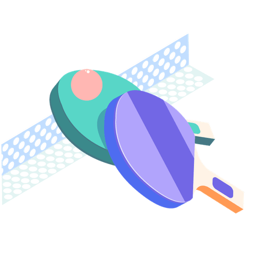

Mit der Academy erhaltet ihr im Business-Plan praxisnahe Lernmodule rund um Facilitation und wirksame Transformation.
Gemeinsam mit 9 Spaces zeigt Plan International Deutschland, wie wertebasiertes Arbeiten Orientierung gibt – nach innen wie nach außen.

Manche Konflikte können wir nur schwer in Worte fassen. Unser Tool hilft dabei, gemeinsam zu verstehen, worum es wirklich geht.
So meisterst du schwierige Gespräche, ohne dass es kracht.
Dieses Tool setzt da an, wo viele Konflikte beginnen und auch scheitern: beim Perspektivwechsel. Es hilft dabei, Konflikte schneller und konstruktiver zu lösen.
Ein Tool, das dir dabei hilft, zu reflektieren, wie du kommunizierst